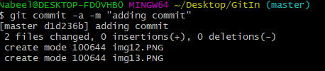
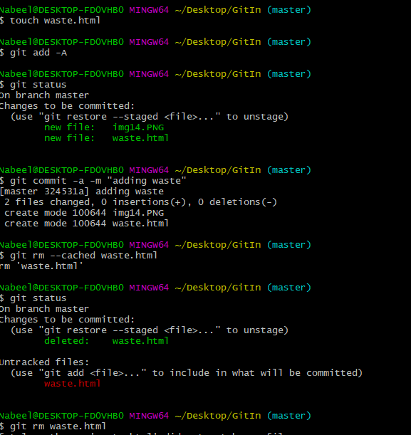
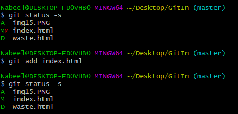
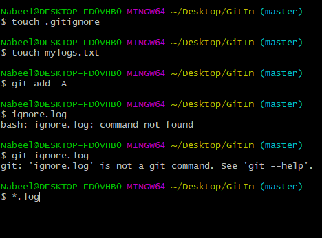
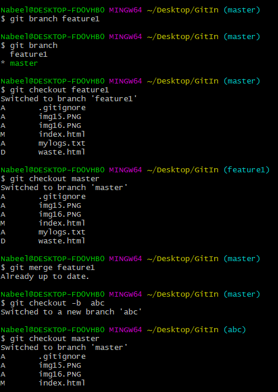
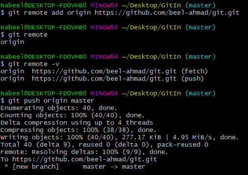
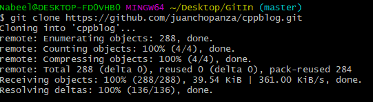

2.git config --global user.email example@mail.com

1.git config --global user.name abc..
2.git config --global user.email example@mail.com
1.git config --global user.name
2.git config --global user.email

$ git init
RESULT:
Initialized empty Git repository in
C:/Users/zee/Desktop/git in one video cwh/.git

ls -lart
print the list of all folder including hidden folders

$ git status
RESULT:
On branch master
No commits yet
Untracked files:
(use "git add

1.git add "git commands and notes.txt"

git commit
RESULT:
Vim editor will be opened
1: press i to INSERT
2: Write the commit notes ("Initial Commit")
3: Press 'ESC' and now type ':wq' and press Enter
4: Now run 'git status' command


git add -A
1. Now if you check the status you will see that files are now
in staged area and now you can commit the files to shift them
in unmodified phase.
2 Note: if you edit a already have a file in unmodified phase
and edit it then it is now in modified phase and not you will
have to shift to staged and then commit phase to take it back
to the unmodified phase.
It will commit the changes without opening the vim editor

1.git checkout Filename
2.git checkout -f (To checkout all files at once)

git log //show all the commits
(press q to exit from git log)
git log -p -5 note: // show last 5(or any number you write) commits and also show the changes that were made
It will commit the changes without opening the vim editor

git diff
git diff --staged // compared staged stage with last commit


git commit -a -m "Type the commit message here"

git rm --cached Filename //File will be removed from the staged
and now it is untracked
git rm Filename //Completely delete a File

git status -s //red M shows in first column shows
modified in working area
//Green M shows in second column shows
file is added Staged area
// Green M in first column and Red M in second
column shows staged file is edited and now in
untracked stage

1). Create a file with name .gitignore
(note: create it from touch command i.e.
touch .gitignore
Because if you try to create it through the
windows explorer then OS will save it and consider
it like a file with empty name and .gitignore
extension
)
2). Write the names of files in .gitignore file which you want
to be ignored in this project directry and add this file to
the staged area,
3). Whether that file is in same folder or in some child or
grandchild folder or up to so on , that file or the all files
with same name in any sub folder of the main project folder
will be ignored.
-> igonore.log // will ignore all the ignore.log from all the
sub folders
-> *.log //will ignore all the files with extension .log
-> ignore/ //ignore all the files in ignore folder

To create a branch
git branch Feature1
// A branch with the name Feature1 will be created
// By default you are in master branch (your main project)
To switch between a branch
git checkout feature1
//you will be switched to feature1 branch (copy of your master branch)
To merge the branch
-> switch back to master branch
git checkout master
-> run the command
git merge feature1
The branches and their commits will be merged
To check all the present branches
-> git branch
To create and switch a branch at once, then run
-> git checkout -b flaskIntegration
flaskIntegration is the name of new branch

-> First create a github account
-> Create a New Repository(remote repository)
-> git remote add origin https://github.com/reponame/git-in-one-video.git
(Copy and paste it in git bash and your git repository will be added as 'origin'
-> Now run "git remote" to check the remote repository.
-> git remote -v // will show the url of origin as well
-> git push origin master (push the master branch to origin)
--> note : it will not work if remote directory is private.
-> Now you will have to generate an SSH key and add it to your master directory and then push
-->ssh-keygen -t ed25519 -C "example@gmail.com" // SSh key will be generated and saved in a file
-->eval "$(ssh-agent -s)" // produce agent process id
Agent pid 4652 // in my case agent pid
*we have added ssh private keey to ssh-agent
-->cat ~/.ssh/id_ed25519.pub //your ssh key will be produced
-->Copy it and paste it on your remote repository
settings->SSH key and GPG keys -> click new SSH key
--> git push -u origin master //will push your repository to github remote repository you created.
--> Only master branch will be pushed
--> To push other branch as well first
- switch to that branch i.e. git checkout feature1
- git push -u origin feature1

-> search for it
-> copy the name path of the repository
-> create a folder and open git bash there and run the following command
git clone repositorypath folderName
